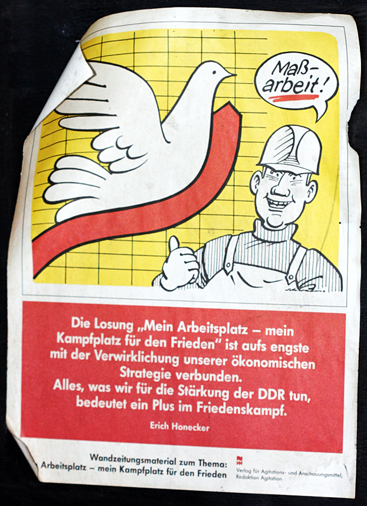

Subscribe Now!
...with web-based news readers. Click your choice below:


...with other readers:
FeedBurner makes it easy to receive content updates in My Yahoo!, Newsgator, Bloglines, and other news readers.
Learn more about syndication and FeedBurner...
Current Feed Content
-
Neue Facebook-Gruppe für Paketband-Fans
Posted:Thu, 01 Jul 2010 20:01:20 +0000
Tolle Neuigkeiten für alle Freunde und Gönner des guten, alten Paketbandes: Ich habe eine Facebook-Gruppe gegründet, die dem Paketband huldigt. Solltet ihr also auch nie ohne eine Rolle Paketband aus dem Haus gehen und Gewebeband jeglicher Art verschmähen, seid ihr in dieser Gruppe genau richtig.
Also kommt herbei - Paketband-Gruppe auf Facebook
-
New York 2010: Die fotografische Ausbeute
Posted:Mon, 14 Jun 2010 07:04:29 +0000
Seit einiger Zeit schon habe ich mir überlegt, dass man eigentlich mal nach New York City fliegen müsste. Die Stadt angucken, auf sich wirken lassen und natürlich auch fleißig fotografieren. Als ich in den letzten Semesterferien dann zu hause saß, habe ich mir außerdem überlegt, dass es eigentlich nicht sein könne, dass man in den Semesterferien nicht wegfährt.
Also habe ich kurzerhand Flug und Hotel gebucht - sechs Tage New York, von Ende Mai bis Anfang Juni. Untergekommen bin ich im Hotel Riverside Studios, einer ranzigen Absteige in der Upper West Side. Allerdings liegt das Hotel sehr schön nahe dem Central Park, weshalb ich mich nicht beschweren möchte.
In den sechs Tage in New York bin ich dann in erster Linie gelaufen, weshalb schon am zweiten Tag meine Füße geschmerzt haben. Des weiteren habe ich aufgrund der recht sommerlichen Temperaturen um die 30°C in nicht unerheblichem Maße transpiriert. Da ich außerdem sehr sparsam Klamotten mitgenommen habe, musste ich mir ab dem dritten Tag überlegen, was ich mit meiner Kleidung anstelle, um nicht stinkend wie ein Penner durch die Stadt zu laufen.
Die Gesamtsituation war also nicht hundertprozentig ideal. Trotzdem habe ich viel gesehen und noch mehr fotografiert. 957 Bilder sind es geworden, wovon es 260 Bilder schließlich auf meinen Flickr-Account geschafft haben. Aufgeteilt ist diese Endauswahl wiederum auf 13 Sets, welche ich im folgenden kurz vorstellen möchte:
Natürlich habe ich es mir nicht nehmen lassen, einen morgendlichen Spaziergang über die Brooklyn Bridge zu machen. Zum Set →
Auf der anderen Seite angekommen, habe ich den Brooklyn Heights einen Besuch abgestattet. Zum Set →
Zweimal bin ich durch den Central Park gelaufen, wobei ich trotzdem nur einen kleinen Teil gesehen habe. Das Teil ist wirklich groß! Zum Set →
China Town habe ich mir auch angesehen, wobei ich es vorgezogen habe, zum Essen weiter nach Little Italy zu ghen. Zum Set →
Ich bin sowohl frühmorgens als auch nachmittags über die 5th Avenue gelaufen, wobei ich sagen muss, dass es morgens angenehmer ist, wenn die Shopping-wütigen Massen noch schlafen. Zum Set →
Natürlich muss man mal zur Südspitze Manhattans. Allerdings walzen auch hier die Massen durch die Straßen und stehen schätzungsweise vier Stunden lang Schlange, um einmal nach Liberty Island schippern zu dürfen… Zum Set →
Greenwich Village ist mittlerweile zwar auch eine relativ hochpreisige Wohngegend, aber nach wie vor sehr beschaulich. Kaum zu glauben, dass es auf Manhattan so ruhig sein kann. Zum Set →
Am Gebäude des Guggenheim Museums gibt es nichts zu meckern, das macht einfach was her. Der Eintrittspreis ist mit $15 (Studententarif) allerdings schon recht amtlich. Zum Set →
Mit dem Metropolitan Museum of Art kann man nichts falsch machen - der Eintrittspreis ist fair und gezeigt wird viel. Sehr viel! Zum Set →

Das Museum of Modern Art (MoMA) ist auch eine runde Sache, der Besuch lohnt sich. Allerdings sollte man sich nicht von den Extremisten, die vor dem Museum campieren, und der langen Schlange nach dem Öffnen des Museums, verrückt machen lassen. Anstellen, 10 Minuten gedulden - schon ist man drin. Zum Set →
Von Chelsea bis Greenwich Village verläuft eine alte Metro-Hochtrasse, die zum Park umgebaut wird. Die südliche Hälfte ist schon geöffnet und ein Besuch lohnt sich. Das Ding ist hübsch gemacht und bietet etwas Ruhe abseits des hektischen Treibens. Zum Set →

"Where the dirty hipsters are." Williamsburg ist allemal einen Ausflug wert, gerade wenn man sich in Sachen Street-Art ein bißchen umgucken möchte. Am besten startet man von der Station "Bedford St." aus. Zum Set →

Zum Abschluss noch ein ganzer Haufen Fotos, die ich nicht mehr so richtig zuordnen kann bzw. die In Stadtteilen wie Chelsea und SoHo entstanden sind, wo ich nicht in dem Maße aktiv war, als dass es sich gelohnt hätte, ein eigenes Set dafür aufzumachen. Zum Set →
So, das war es auch schon. Ich gebe zu, es sind viele Fotos und alle anzugucken dürfte etwas Zeit erfordern. Aber mal reingucken lohnt sich auf jeden Fall. Übrigens kann ich auch Flickrs Slideshow-Funktion empfehlen. Dafür in den Sets oben rechts auf den entsprechenden Button klicken, zurücklehnen und gucken.
-
Antilopengang – Fick die Uni (feat. Danger Dan)
Posted:Fri, 04 Jun 2010 18:12:55 +0000
Das ist ein ganz heißer Tip, den ich hier bekommen habe - "Fick die Uni" von der Antilopengang. Der Text des Liedes ist in Teilen durchaus kontrovers, andererseits werden Wahrheiten ausgesprochen. Man beachte allein den Titel! Vielen Dank nochmal an dieser Stelle für den Hinweis.
Übrigens kann man hier das Album "Spastik Desaster" der Antilopengang runterladen. Ich selbst habe das noch nicht getan, werde es aber gleich nachholen.
Und damit ein schönes Wochenende.
-
Krobart: Das Moleskine als Spiegel des Alltags
Posted:Tue, 25 May 2010 19:44:20 +0000
Okay, der Titel ist nicht hundertprozentig korrekt, da Krobart den Alltag auch in Fotografien festhält, aber darüber sehen wir mal wohlwollend hinweg. Ein Großteils seines Portfolios besteht aus liebevollen Illustrationen, die das alltägliche Leben wiederspiegeln. Es lohnt also, seine Seite mal anzugucken. Leider erfährt man sonst relativ wenig über den Künstler. Wer also zufällig ein paar relevante Informationen beisteuern kann, ist herzlich eingeladen, die Kommentar-Funktion zu nutzen.
Krobart
Gefunden bei Artskills -
JavaScript-Action auf Phase 5
Posted:Sun, 09 May 2010 14:20:29 +0000
Da Phase 5 ja auch meine Developer-Spielwiese ist, mussten hier natürlich ein JavaScript-Spielereien integriert werden. Dies habe ich in den letzten Tagen erledigt:
- Die Sociable-Links, mit denen man Beiträge bookmarken, twittern, bei Facebook posten, etc. kann, sind nun auch auf der Startseite eingebunden. Man muss nur auf das Lesezeichen-artige Icon unter den Beiträgen klicken und schon geht die Sause los.
- Die Pagination, die zugegebenermaßen recht umfangreich ist, wird nun in der Höhe begrenzt. Fährt man mit dem Mauszeiger darüber, vergrößert sich der Bereich und alle Seiten werden angezeigt.
- Oben auf der Seite ist ein Schalter, mit dem man festlegen kann, ob externe Links in einem neuen Fenster geöffnet werden sollen oder nicht. Über einen Cookie merkt sich euer Browser die Einstellung.
Über die Sinnhaftigkeit dieser Spielereien müssen wir nicht reden, da ich sie aus reinem Spaß an der Freude eingebaut habe. Über die Funktionstüchtigkeit dagegen schon eher. Wenn ihr also das Gefühl habt, die Sachen laufen nicht so, wie sie sollen, wäre es schön, wenn ihr das per Kommentar melden könntet. Dann kann ich mich dranmachen und das Problem beheben.
Soviel zu den Neuigkeiten - ich wünsche noch einen schönen Sonntag!
-
Googles humorige Seite
Posted:Thu, 06 May 2010 20:24:57 +0000
Google - Suchmaschine und Datenkrake unseres Vertrauens - hat eine neue Startseite und die hat es in sich. Beim onload ist nämlich LOL im Doppelpack angesagt. Da ist die gute Laune praktisch vorprogrammiert. Wenn ich recht darüber nachdenke, erscheint mir die Vorstellung, Funktionen von jetzt an mit typischen Internet- und Chat-Abkürzungen wie ROFLMAO und OMG zu benennen, verhältnismäßig attraktiv.
Ein Extra-LOL ist dabei natürlich auf Seiten desjenigen, der das Projekt dann irgendwann einmal übernimmt. Von wegen "Code is Poetry"…
-
Will the iPad shred?
Posted:Wed, 05 May 2010 13:49:49 +0000
Jeff King von Build To Shred und Profi-Skater Chad Knight bauen ein Apple iPad zum Skateboard um. Daran ist nichts zu auszusetzen. Dass sich Chad Knight allerdings mit dem umgebauten iPad eine Miniramp runterstürzt, um der Frage nach zugehen: "Will ist shred?", ist schon leicht grenzwertig. Allerdings sieht er schnell ein, dass da kein Segen drin liegt und so wird kurzerhand die iRamp etabliert. Die wiederum ist ziemlich cool!
Alles in allem also eine runde Sache. Auch ohne Flash.
Gefunden bei recombu.com
-
How to Destroy Angels – A Drowning
Posted:Tue, 04 May 2010 18:15:50 +0000
So wie es aussieht, macht Trent Reznor - einem breiteren Publikum bekannt durch Schmankerl wie Nine Inch Nails - nun Musik mit seiner ihm Angetrauten - Mariqueen Maandig. Das ganze firmiert unter dem Namen How to Destroy Angels und der erste veröffentlichte Song, A Drowning, klingt durchaus gefällig. Im Sommer soll ihre EP erscheinen. Die Zeit bis dahin kann man mit Neuigkeitsfetzen von ihrer Homepage überbrücken: How to Destroy Angels.
Gefunden bei Pitchfork
-
Start Up Signs – Don’t front in our hood, biotch!
Posted:Sun, 02 May 2010 11:28:56 +0000
Sollte man bei einem der Start-Ups arbeiten, die bei Start Up Signs mit einem Zeichen gewürdigt werden, kann man das ab jetzt auch in der Hood adäquat kommunizieren, ohne die mühsam erworbene Street-Credibility zu verspielen. Allerdings braucht man geschmeidige Finger dafür. Meine Probe aufs Exempel hat ergeben, dass ich das Google-Logo nicht schaffe, selbst wenn ich mir die Finger hinbiege. Draußen auf der Straße blitzschnell mit beiden Händen gleichzeitig das Logo zu präsentieren ist also vom Schwierigkeitsgrad her eher advanced.
via @wpSEO
-
Alles raus zum 1. Mai
Posted:Sat, 01 May 2010 11:19:04 +0000
"Alles raus zum 1. Mai" lautet die Losung. Und weil ich als alter Ossi den 1. Mai immer mit der DDR verbinde, gibts hier noch ein schönes Mai-Plakat vom Verlag für Agitations- und Anschauungsmittel:

Ich selbst bin übrigens nicht draußen beim "Marschieren", sondern sitze am Schreibtisch und biedere mich der Intelligenzija an. Irgendwer muss es ja machen!
(Foto: 1st of May in the GDR von diwan)
{kind=link}
FeedBurner delivers the world's subscriptions wherever they need to go. Publish a feed for text or podcasting?
You should try FeedBurner today.